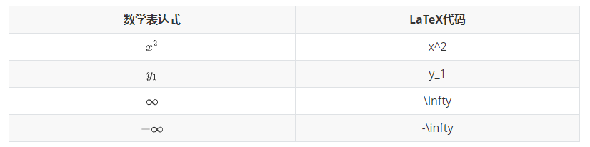
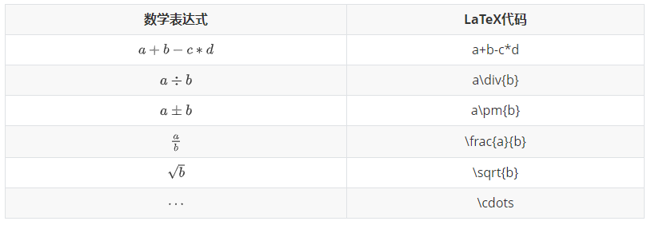
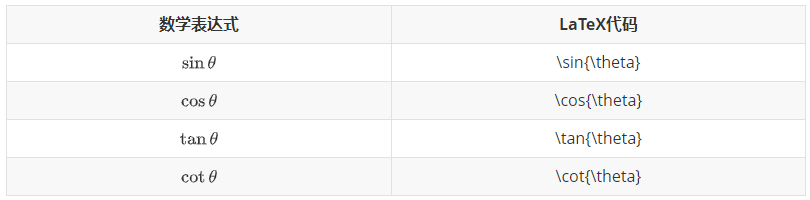
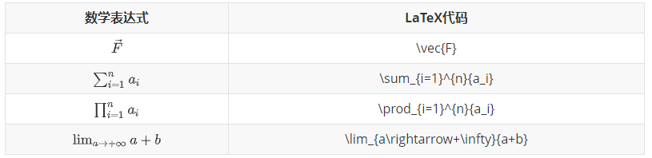
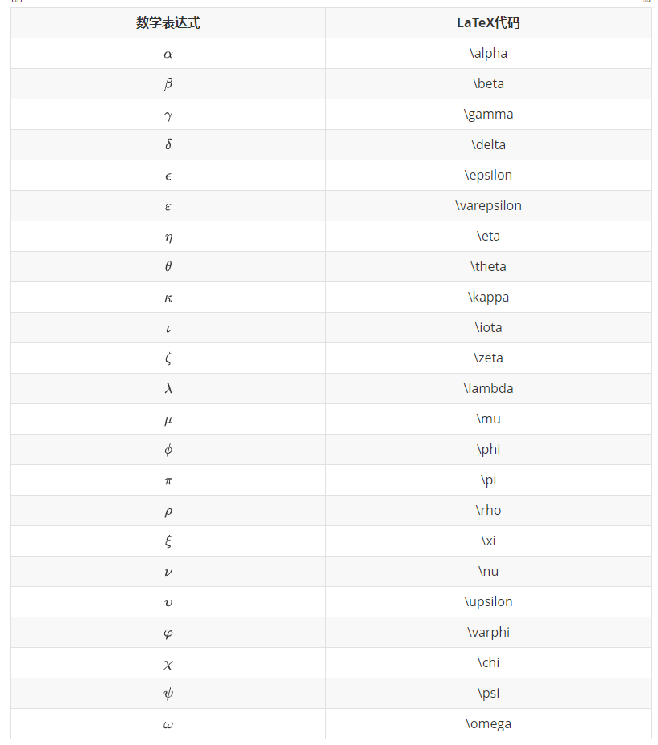

公式块与行内公式的添加
先在偏好设置里面打开公式输入，然后重启Typora
这个齐：https://www.cnblogs.com/dingdangsunny/p/12312966.html
常用公式代码
用{}包裹的表达式会被看做一个整体
（下面LaTeX代码在Typora中使用时要用$包裹起来）
- 上下标，正负无穷
- 加减乘，分式，根号，省略号
- 三角函数
- 矢量，累加累乘，极限
- 希腊字母
- 数学符号
上下标，正负无穷

式子作为下标：ax+y – $a_{x+y}
加减乘，分式，根号，省略号

点乘：a \cdot b
a⋅b
叉乘：a \times b
a×b
上下取整
⌈x⌉ ： \lceil x \rceil
⌊x⌋ ：\lfloor x \rfloor
三角函数

矢量，累加累乘，极限

希腊字母

| 希腊字母 |
latex |
| α |
\alpha |
| β |
\beta |
| γ Γ |
\gamma \Gamma |
| δ Δ |
\delta \ Delta |
| ϵ,ε,E |
\epsilon \varepsilon E |
| ζ,Z |
\zeta Z |
| η,H |
\eta H |
| θ,ϑ,Θ |
\theta \vartheta \Theta |
| ι,I |
\iota I |
| κ,K |
\kappa K |
| λ,Λ |
\lambda \Lambda |
| μ,M |
\mu M |
| μ,N |
\mu N |
| ξ,Ξ |
\xi \Xi |
| o,O |
o O |
| π,Π |
\pi \Pi |
| ρ,ϱ,P |
\rho \varrho P |
| σ,Σ |
\sigma \Sigma |
| τ,T |
\tau T |
| υ,Υ |
\upsilon \Upsilon |
| ϕ,φ,Φ |
\phi \varphi \Phi |
| χ,X |
\chi X |
| ψ,Ψ |
\psi \Psi |
| ω,Ω |
\omega \Omega |
关系运算符

大写形式只要将字母开头大写即可
以上 https://blog.csdn.net/mingzhuo_126/article/details/82722455
数学符号
| 数学表达式 |
代码 |
| ⟺ |
\iff |
| = |
\neq |
| ≡ |
\equiv |
| → |
\rightarrow |
| ⇒ |
\Rightarrow |
| y^ |
\hat{y} |
| ∀ |
\forall |
| ∃ |
\exists |
| ∈ |
\in |
| ⊂ |
\not\subset |
| ∅ |
\emptyset |
| ⊂ |
\subset |
| ⊆ |
\subseteq |
| ∵ |
\because |
| ∴ |
\therefore |
| ∵ |
\because |
| ∠ |
\angle |
| ∞ |
\infty |
| ∈/ |
\notin |
补充的一些：
| 数学表达式 |
代码 |
| x⋅y |
\overline{x\cdot y} |
| dxdy |
\dfrac{dy}{dx} |
| ∫04f(x)dx |
\int_{0}^{4} f(x) dx |
| 90∘ |
90 ^\circ |
| ∬ |
\iint |
| ∭ |
\iiint |
| ∬04f(x)dx |
\iint_{0}^{4} f(x) dx |
| x∪y∩z |
x \cup y \cap z |
| n345 |
\sqrt[n]{345} |
| aij |
a_{ij} |
| y′,y′′ |
y’,y’’ |
| x∨y∧z |
x \lor y \land z |
| ∮ |
\oint |
| $ |
x |
| AB⌢ |
\overset{\LARGE{\frown}}{AB} |
| AθBR⋈S |
\mathop{R \bowtie S} \limits_{A \theta B} |
1. 使用\ 表示空格
以及调整空格的大小
| quad空格 |
a\ \qquad b |
ab |
两个m的宽度 |
| quad空格 |
a\ \quad b |
ab |
一个m的宽度 |
| 大空格 |
a\ b |
a b |
1/3m宽度 |
| 中等空格 |
a\;b |
ab |
2/7m宽度 |
| 小空格 |
a\,b |
ab |
1/6m宽度 |
| 没有空格 |
ab |
ab |
|
| 紧贴 |
a!b |
ab |
缩进1/6m宽度 |
2. 使用\ \表示换行
矩阵
简单矩阵
使用\begin{matrix}…\end{matrix}生成， 每一行以\\结尾表示换行，元素间以&间隔，式子的表示序号\tag{1}（右边的序号）。
1
2
3
4
5
6
7
| $$
\begin{matrix}
1 & 2 & 3 \\
4 & 5 & 6 \\
7 & 8 & 9
\end{matrix} \tag{1}
$$
|
带左右括号的矩阵(大中小括号)
方法一：在\begin{}之前和\end{}之后添加左右括号的代码。
大括号：
1
2
3
4
5
6
7
8
9
| $$
\left\{
\begin{matrix}
1 & 2 & 3 \\
4 & 5 & 6 \\
7 & 8 & 9
\end{matrix}
\right\} \tag{2}
$$
|
中括号：
1
2
3
4
5
6
7
8
9
| $$
\left[
\begin{matrix}
1 & 2 & 3 \\
4 & 5 & 6 \\
7 & 8 & 9
\end{matrix}
\right] \tag{3}
$$
|
小括号：
1
2
3
4
5
6
7
8
9
| $$
\left(
\begin{matrix}
1 & 2 & 3 \\
4 & 5 & 6 \\
7 & 8 & 9
\end{matrix}
\right) \tag{4}
$$
|
方法二：改变\begin{matrix}和\end{matrix}中{matrix}
大括号：
1
2
3
4
5
6
7
| $$
\begin{Bmatrix}
1 & 2 & 3 \\
4 & 5 & 6 \\
7 & 8 & 9
\end{Bmatrix} \tag{6}
$$
|
中括号：
1
2
3
4
5
6
7
| $$
\begin{bmatrix}
1 & 2 & 3 \\
4 & 5 & 6 \\
7 & 8 & 9
\end{bmatrix} \tag{6}
$$
|
包含希腊字母与省略号
行省略号\cdots，列省略号\vdots，斜向省略号（左上至右下）\ddots。
1
2
3
4
5
6
7
8
9
10
| $$
\left\{
\begin{matrix}
1 & 2 & \cdots & 5 \\
6 & 7 & \cdots & 10 \\
\vdots & \vdots & \ddots & \vdots \\
\alpha & \alpha+1 & \cdots & \alpha+4
\end{matrix}
\right\}
$$
|
表格
简易表格
1
2
3
4
5
6
7
8
| $$
\begin{array}{|c|c|c|}
\hline 2&9&4\\
\hline 7&5&3\\
\hline 6&1&8\\
\hline
\end{array}
$$
|
开头结尾： \begin{array} ， \end{array}
定义式：例：{|c|c|c|}，其中c l r 分别代表居中、左对齐及右对齐。
分割线：①竖直分割线：在定义式中插入 |， （||表示两条竖直分割线）。
②水平分割线：在下一行输入前插入 \hline，以下图真值表为例。
其他：每行元素间均须要插入 & ，每行元素以 \\ 结尾。
真值表
A0011B0101F0111
1
2
3
4
5
6
7
8
9
| $$
\begin{array}{cc|c}
A&B&F\\
\hline 0&0&0\\
0&1&1\\
1&0&1\\
1&1&1\\
\end{array}
$$
|
多行等式对齐
a=b+c=d+e+f
1
2
3
4
5
6
| $$
\begin{aligned}
a &= b + c \\
&= d + e + f
\end{aligned}
$$
|
方程组、条件表达式
方程组：
⎩⎨⎧3x+5y+z7x−2y+4z−6x+3y+2z
1
2
3
4
5
6
7
| $$
\begin{cases}
3x + 5y + z \\
7x - 2y + 4z \\
-6x + 3y + 2z
\end{cases}
$$
|
同理，条件表达式：
1
2
3
4
5
6
7
| $$
f(n) =
\begin{cases}
n/2, & \text{if }n\text{ is even} \\
3n+1, & \text{if }n\text{ is odd}
\end{cases}
$$
|
间隔 (大小空格、紧贴)
紧贴 + 无空格 + 小空格 + 中空格 + 大空格 + 真空格 + 双真空格
1
2
3
| $$
a\!b + ab + a\,b + a\;b + a\ b + a\quad b + a\qquad b
$$
|
紧贴\!
无空格 小空格\, 中空格\; 大空格\
真空格\quad 双真空格\qquad